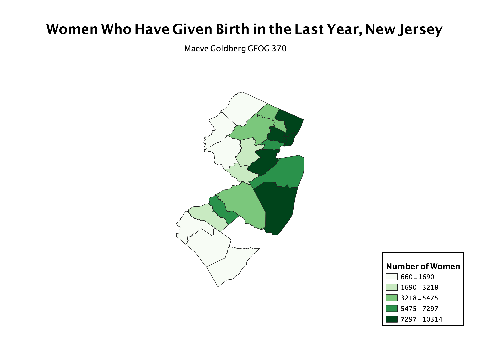

Homework 7: Census data choropleth
Maeve Goldberg
This data from the 2019 US Census shows the number of women ages 15-50 who had given birth in the last year in each New Jersey county. My map shows that in counties in Norther New Jersey, closer to New York City, more women had given birth.

Data used for this project
CSV dataset
GeoJSON Vector File